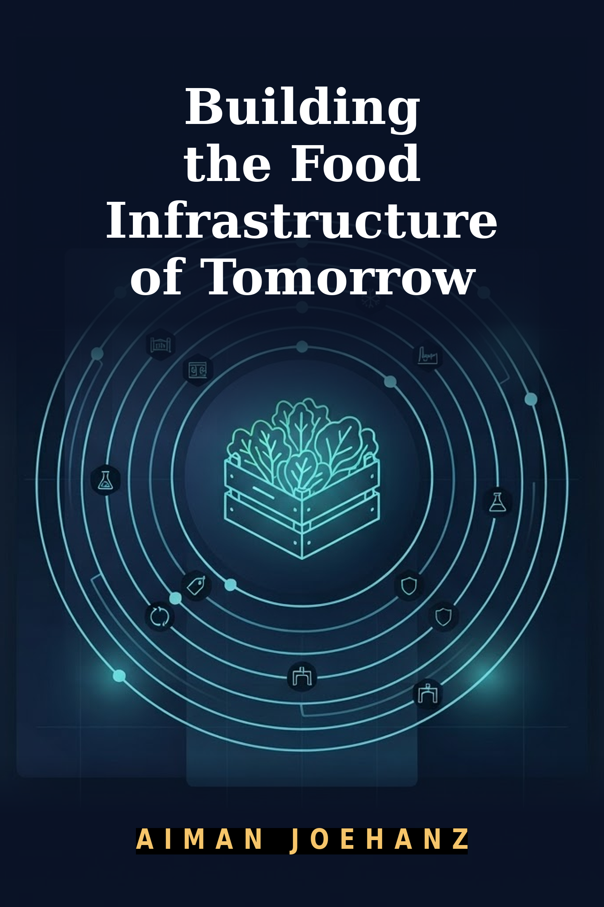

Building Infrastructure of Tomorrow · Volume 63

The Ten-Layer Machine That Feeds a City
A city eats three times a day on the strength of a machine it never sees whole, and this volume follows one crate of leafy greens through the ten layers that keep it honest: the farm gate where the harvest is handed over and graded, the cold chain where freshness is a temperature somebody must defend, the factory where raw crops are made edible by design, the laboratory where the invisible is caught before anyone eats it, the standard where safe is spelled out before it is carried out, the border where another country's harvest is admitted on paper, the market where perishable things find a price before the city wakes, the shelf where the promise is printed and dated, the recall where failure is traced backward and withdrawn from a world that has already bought it, and the ledger where the whole system is accounted and the question of who eats is answered in numbers. Written in plain language around one week of one fictional crate and the food authority that shepherds it, naming no firm and quoting no outbreak's published toll, it leaves the reader able to read a food system the way an inspector does, to price the quiet margins nobody publishes, and to understand why the food is not the product, and the trust is.
A meal is the most frequent act of trust a human being performs, three times a day for a whole life, a stranger's work taken into the body without a test, a warranty, or a second thought, and that willingness, renewed at every table, is the founding trick of the food machine and the reason the machine behind it is the largest and least visible the species has ever built. The citizen pictures food as a field and a kitchen, soil at one end and a plate at the other, and supposes the stretch between them is a kind of honest weather. The working truth is that the field and the kitchen are the only two places the machine allows a citizen to see, and everything between is a relay of strangers: by the time a leaf of greens reaches a fork, the crop was graded and weighed at a farm gate by a buyer nobody at the table has met, chilled through a chain of rooms whose temperatures are somebody's job to defend, cut and washed in a factory designed around a hazard list, sampled by an inspector whose laboratory result will arrive days after the crate has moved on, measured against a standard written in an office, admitted or refused at a border by an officer reading a certificate, priced in a wholesale market before dawn by traders bidding on the future of a perishable thing, printed with a label that makes promises about dates and origin, and, on the weeks the machine fails, chased backward through every one of those steps by people trying to withdraw it before it hurts somebody, the whole journey finally settled into a ledger that decides, in aggregate, who gets fed at all. A diner holding only the field-and-kitchen picture cannot ask what would keep this machine straight: who graded the crate, who countersigned the cold chain, which laboratory is running late, and which lot code, on which morning, was stamped by a tired clerk onto the wrong pallet.
Two disciplines govern the pages ahead. The first is the series' long-standing vow, renewed in every volume and renewed here: no company is named, no chain is flattered, no outbreak tally is quoted from any real country, and no date is attached, since the anatomy outlives whatever instance might be hung upon it, and a reader holding the structure can interrogate any food authority, any cold store, and any border post in ordinary language, under any government, at any table. The second is the procedure: every chapter works from a single standing example, a fictional national Food Authority charged with a city of ordinary appetite, a composite announced here and kept unchanged to the last page, on the ground that a machine built of perishables reveals itself not in its diagrams but in one unremarkable week of its labour, read entry by entry, like a chart at a bedside. The Authority's week, Monday's gate intake through Sunday's ledger review, with its weather-graded crate, its warming pallet, its late result, its refused certificate, and its two-day recall, furnishes the worked material for all that follows, from the opening bench to the closing account.
A note on the numbers is owed before any of them appear. Every figure in the book is a field drill, composed from ratios the trade itself uses rather than from some bureau's published table; the arithmetic is rounded deliberately and presented as orders of scale, never as quotation, because the lesson sits in the proportions, and a reader who wants a real system's exact ledger has been handed, section by section, the questions that would draw it out. The Authority's week is a fiction, but nothing in it floats free: every dispute, custom, and account in it rests on habits the food trade itself has written down, and a reader who finds their own food system mirrored in a case has taken the case as it was intended.
— From the Introduction
Published by Aiman JoeHanz · Building Infrastructure of Tomorrow